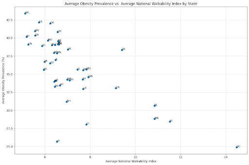
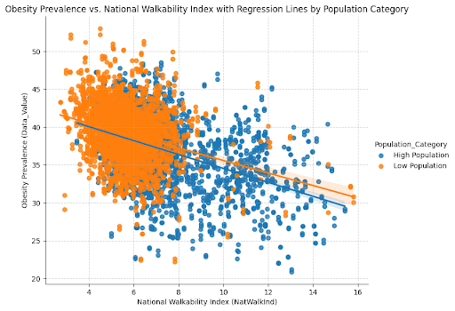
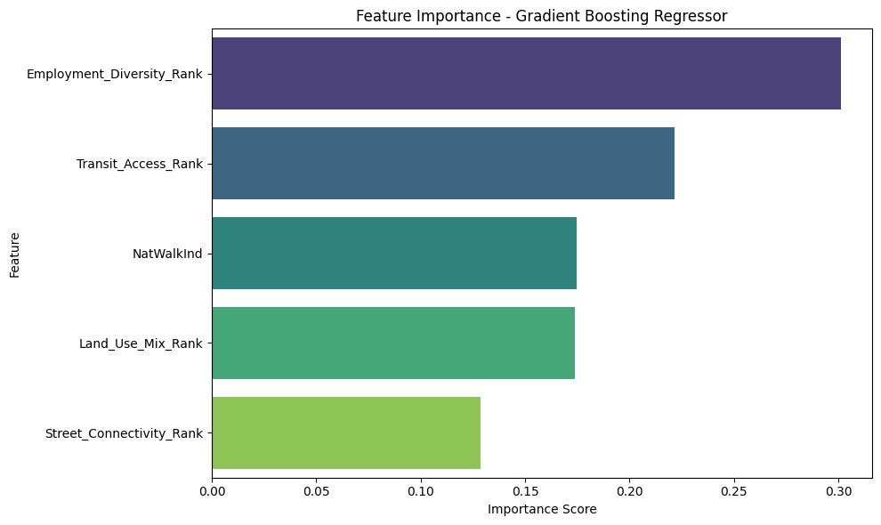

Predicting Obesity Prevalence Using Walkability Metrics via Machine Learning
Overview
This study investigates the relationship between the built environment and adult obesity prevalence at the county level. The primary goal was to evaluate the predictive power of walkability metrics, such as the National Walkability Index and its components (land use mix, street connectivity, and transit access), on obesity rates using machine learning models.
Data Utilized
CDC PLACES dataset (2021-2022 release): County-level health outcomes, including adult obesity prevalence (Data_Value), for all 50 states.
EPA Smart Location Database (2019 data): Walkability metrics, including the National Walkability Index (NatWalkInd) and its components (D2A_Ranked, D2B_Ranked, D3B_Ranked, D4A_Ranked) by census tract. Aggregated to county level and merged via custom LocationID.
Key Outcomes
Initial Multiple Linear Regression had limited predictive accuracy (R² ≈ 0.26, RMSE ≈ 3.65).
Employment Diversity Rank and Transit Access Rank were most influential predictors, suggesting nonlinear and interactive effects.
Summary
This project evaluated the predictive power of the National Walkability Index and its components on adult obesity rates, showing strong, nonlinear influence of walkability on public health. Machine learning (Gradient Boosting) markedly outperformed traditional linear regression approaches.
Project Motivation
The built environment shapes health behaviors and outcomes. Higher walkability - through mixed land use, density, and connectivity - promotes physical activity, potentially reducing obesity and related diseases.
Research Aims
Can a machine learning regression model accurately predict the obesity percentage using the national walkability score and its component variables?
This is a supervised regression problem, predicting continuous obesity prevalence. Predictors: Walkability components from EPA, Response: Obesity prevalence from CDC PLACES.
Metrics: R², RMSE, and k-fold cross-validation for model evaluation.
Feature Engineering: Created LocationID for merges, cleaned and aggregated EPA metrics, engineered population category.
Visualization: Used histograms and scatterplots to inspect distributions, correlation heatmaps for multicollinearity.
Modeling: Baseline with linear regression (R² ≈ 0.26), upgraded to Gradient Boosting for improved fit (R² ≈ 0.78, RMSE ≈ 1.99).
Following the merge, the EPA data was grouped by LocationID. The walkability component ranks (D2A_Ranked, D2B_Ranked, D3B_Ranked, D4A_Ranked) and the National Walkability Index (NatWalkInd) were aggregated using the mean for each county, while the total population was summed. To improve readability, the walkability component columns were renamed to Land_Use_Mix_Rank, Employment_Diversity_Rank, Street_Connectivity_Rank, and Transit_Access_Rank.
Distribution of walkability component ranks and obesity prevalence.
This shift allowed me to conclude that the influence of the built environment, specifically Employment Diversity and Transit Access on obesity is strong but non linear, a complexity that simple linear modeling could not capture.

Average Obesity Prevalence vs. Average National Walkability Index by State

Obesity Prevalence vs. National Walkability Index with Regression Lines by Population Category
This validates the use of a more complex, non-linear model to capture the intricate relationships within the data.
Model comparison: RMSE (lower is better) and R-squared (higher is better).
Conclusion
Machine learning (Gradient Boosting) markedly improves prediction of adult obesity prevalence using walkability features versus classic linear regression.
Feature rankings highlight the non-linear, interactive role of employment diversity and transit access. Findings support targeted urban design for improved public health outcomes.

Feature Importance scores from the Gradient Boosting Regressor.